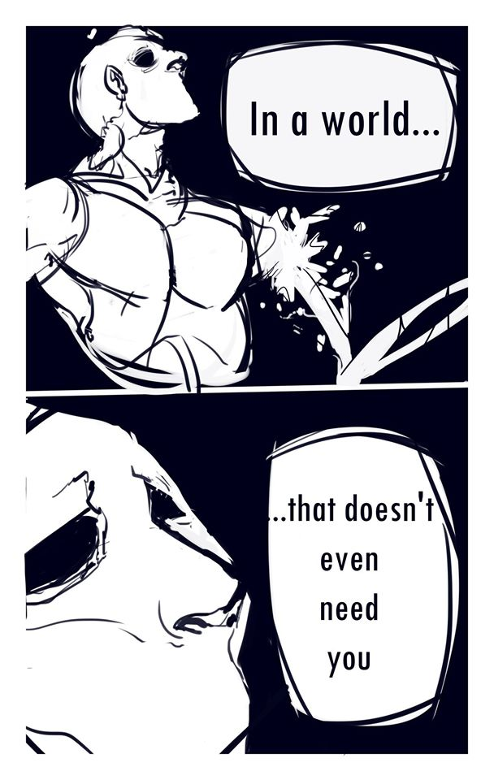

Forcing Changes Through Change
Forcing yourself to challenges is one of the best way to complete projects. For example, if you are having a hard time drawing settings, why not do a comic that focuses on settings and creating environments? If you are having difficulties drawing characters, why not focus on drawing character figures and expressions and poses? Point being—force yourself to focus on those challenging things so that you can improve your weaknesses.

Music does not belong to me Tycho- Dive Full Album
Alonzo Martinez